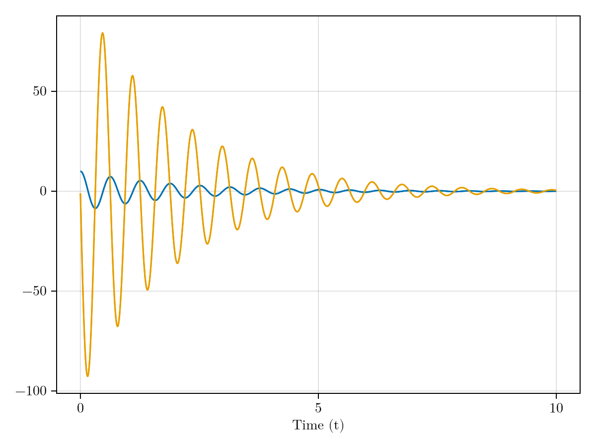

Package Imports
Mass - Spring - Damper Example
using SystemBondGraphs
using ModelingToolkit: inputs
using OrdinaryDiffEq
using CairoMakie
using Latexify
set_theme!(theme_latexfonts())Create the time variable and the empty bond graph:
@variables t
bg = BondGraph(t)Meta graph based on a SimpleDiGraph{Int64} with vertex labels of type Symbol, vertex metadata of type SystemBondGraphs.BondGraphNode, edge metadata of type SystemBondGraphs.BondGraphEdge, graph metadata given by SystemBondGraphs.BondGraphData(t), and default weight 1.0Elements in the bond graph are added with their appropriate add function and assigned a unique name in the bond graph:
add_R!(bg, :R)
add_C!(bg, :C)
add_I!(bg, :I)
add_Se!(bg, :Se)Next, the 1-Junction is added:
add_1J!(bg, :J1_1)The edges are connected with the add_bond! function which modifies the bond graph to have a power bond connecting the nodes. The function is takes the source and sink edge for the power bond.
add_bond!(bg, :J1_1, :R, :e1)
add_bond!(bg, :J1_1, :C, :e2)
add_bond!(bg, :J1_1, :I, :e3)
add_bond!(bg, :Se, :J1_1, :e4)The system of equations is equation from the bond graph with the generate_model function and then simplified with structural_simplify from ModelingToolkit.jl:
sys = generate_model(bg)
sys, _ = structural_simplify(sys, (inputs(sys), []))(ODESystem(0x000000000000000b, Equation[Differential(t)(C₊q(t)) ~ I₊f(t), Differential(t)(I₊p(t)) ~ I₊e(t)], t, Any[C₊q(t), I₊p(t)], SymbolicUtils.BasicSymbolic{Real}[R₊R, C₊C, I₊I, Se₊Se(t)], nothing, Dict{Any, Any}(:Se₊f => Se₊f(t), :R₊R => R₊R, :Se₊Se => Se₊Se(t), :C₊q => C₊q(t), :I₊p => I₊p(t), :I₊e => I₊e(t), :C₊e => C₊e(t), :C₊C => C₊C, :Se₊e => Se₊e(t), :I₊f => I₊f(t)…), Any[], Equation[Se₊e(t) ~ Se₊Se(t), C₊e(t) ~ C₊q(t) / C₊C, I₊f(t) ~ I₊p(t) / I₊I, e4₊e(t) ~ Se₊e(t), e2₊e(t) ~ C₊e(t), C₊f(t) ~ I₊f(t), R₊f(t) ~ C₊f(t), R₊e(t) ~ R₊R*R₊f(t), e4₊f(t) ~ R₊f(t), Se₊f(t) ~ R₊f(t), I₊e(t) ~ -C₊e(t) - R₊e(t) + Se₊e(t), e1₊e(t) ~ R₊e(t), e3₊f(t) ~ e4₊f(t), e3₊e(t) ~ I₊e(t), e2₊f(t) ~ e3₊f(t), e1₊f(t) ~ e2₊f(t)], Base.RefValue{Vector{Num}}(Num[]), Base.RefValue{Any}(Matrix{Num}(undef, 0, 0)), Base.RefValue{Any}(Matrix{Num}(undef, 0, 0)), Base.RefValue{Matrix{Num}}(Matrix{Num}(undef, 0, 0)), Base.RefValue{Matrix{Num}}(Matrix{Num}(undef, 0, 0)), :system, ODESystem[], Dict{Any, Any}(), Dict{Any, Any}(), nothing, nothing, Equation[], ModelingToolkit.Schedule(Union{ModelingToolkit.BipartiteGraphs.Unassigned, ModelingToolkit.StructuralTransformations.SelectedState, Int64}[14, 16, ModelingToolkit.StructuralTransformations.SelectedState(), ModelingToolkit.StructuralTransformations.SelectedState(), 12, 6, 10, 8, 2, 3, 4, 5, 7, 13, 9, 15, 17, 1, 11, 18], Dict{Any, Any}(Differential(t)(I₊p(t)) => I₊e(t), Differential(t)(C₊q(t)) => I₊f(t))), nothing, nothing, ModelingToolkit.SymbolicContinuousCallback[], ModelingToolkit.SymbolicDiscreteCallback[], Dict{Any, Any}(), nothing, nothing, TearingState of ODESystem, ModelingToolkit.Substitutions(Equation[Se₊e(t) ~ Se₊Se(t), C₊e(t) ~ C₊q(t) / C₊C, I₊f(t) ~ I₊p(t) / I₊I, C₊f(t) ~ I₊f(t), R₊f(t) ~ C₊f(t), R₊e(t) ~ R₊R*R₊f(t), I₊e(t) ~ -C₊e(t) - R₊e(t) + Se₊e(t), e4₊f(t) ~ R₊f(t), e3₊f(t) ~ e4₊f(t), e2₊f(t) ~ e3₊f(t), e1₊f(t) ~ e2₊f(t), e1₊e(t) ~ R₊e(t), e2₊e(t) ~ C₊e(t), e3₊e(t) ~ I₊e(t), Se₊f(t) ~ R₊f(t), e4₊e(t) ~ Se₊e(t)], [Int64[], [1], [1, 2], [1, 2, 3], [1, 2, 3, 4], [1, 2, 3, 4, 5], [1, 2, 3, 4, 5, 6], [1, 2, 3, 4, 5, 6, 7], [1, 2, 3, 4, 5, 6, 7, 8], [1, 2, 3, 4, 5, 6, 7, 8, 9], [1, 2, 3, 4, 5, 6, 7, 8, 9, 10], [1, 2, 3, 4, 5, 6, 7, 8, 9, 10, 11], [1, 2, 3, 4, 5, 6, 7, 8, 9, 10, 11, 12], [1, 2, 3, 4, 5, 6, 7, 8, 9, 10, 11, 12, 13], [1, 2, 3, 4, 5, 6, 7, 8, 9, 10, 11, 12, 13, 14], [1, 2, 3, 4, 5, 6, 7, 8, 9, 10, 11, 12, 13, 14, 15]], nothing), true, ModelingToolkit.IndexCache(Dict{Union{Symbol, SymbolicUtils.BasicSymbolic}, Union{Int64, AbstractArray{Int64}}}(:C₊q => 1, :I₊p => 2, I₊p(t) => 2, C₊q(t) => 1), Dict{Union{Symbol, SymbolicUtils.BasicSymbolic}, Tuple{Int64, Int64}}(), Dict{Union{Symbol, SymbolicUtils.BasicSymbolic}, Tuple{Int64, Int64}}(:Se₊Se => (1, 2), C₊C => (1, 1), Se₊Se(t) => (1, 2), :I₊I => (1, 4), :C₊C => (1, 1), R₊R => (1, 3), :R₊R => (1, 3), I₊I => (1, 4)), Dict{Union{Symbol, SymbolicUtils.BasicSymbolic}, Tuple{Int64, Int64}}(), Dict{Union{Symbol, SymbolicUtils.BasicSymbolic}, Tuple{Int64, Int64}}(), Dict{Union{Symbol, SymbolicUtils.BasicSymbolic}, Tuple{Int64, Int64}}(), ModelingToolkit.BufferTemplate[], ModelingToolkit.BufferTemplate[ModelingToolkit.BufferTemplate(Real, 4)], ModelingToolkit.BufferTemplate[], ModelingToolkit.BufferTemplate[], ModelingToolkit.BufferTemplate[], Dict{Symbol, SymbolicUtils.BasicSymbolic}(:e1₊e => e1₊e(t), :Se₊f => Se₊f(t), :R₊R => R₊R, :Se₊Se => Se₊Se(t), :e4₊e => e4₊e(t), :e2₊e => e2₊e(t), :e4₊f => e4₊f(t), :C₊q => C₊q(t), :I₊p => I₊p(t), :I₊e => I₊e(t)…)), nothing, nothing, nothing, ODESystem(0x000000000000000a, Equation[0 ~ -e1₊e(t) - e2₊e(t) + e4₊e(t) - e3₊e(t), 0 ~ e2₊f(t) - e1₊f(t), 0 ~ -e2₊f(t) + e3₊f(t), 0 ~ e4₊f(t) - e3₊f(t), 0 ~ R₊f(t) - e1₊f(t), 0 ~ -e1₊e(t) + R₊e(t), 0 ~ C₊f(t) - e2₊f(t), 0 ~ -e2₊e(t) + C₊e(t), 0 ~ I₊f(t) - e3₊f(t), 0 ~ -e3₊e(t) + I₊e(t), 0 ~ Se₊f(t) - e4₊f(t), 0 ~ -e4₊e(t) + Se₊e(t)], t, Any[], Any[], nothing, Dict{Any, Any}(), Any[], Equation[], Base.RefValue{Vector{Num}}(Num[]), Base.RefValue{Any}(Matrix{Num}(undef, 0, 0)), Base.RefValue{Any}(Matrix{Num}(undef, 0, 0)), Base.RefValue{Matrix{Num}}(Matrix{Num}(undef, 0, 0)), Base.RefValue{Matrix{Num}}(Matrix{Num}(undef, 0, 0)), :system, ODESystem[ODESystem(0x0000000000000001, Equation[0 ~ -e(t) + R*f(t)], t, SymbolicUtils.BasicSymbolic{Real}[f(t), e(t)], SymbolicUtils.BasicSymbolic{Real}[R], nothing, Dict{Any, Any}(:f => f(t), :R => R, :e => e(t)), Any[], Equation[], Base.RefValue{Vector{Num}}(Num[]), Base.RefValue{Any}(Matrix{Num}(undef, 0, 0)), Base.RefValue{Any}(Matrix{Num}(undef, 0, 0)), Base.RefValue{Matrix{Num}}(Matrix{Num}(undef, 0, 0)), Base.RefValue{Matrix{Num}}(Matrix{Num}(undef, 0, 0)), :R, ODESystem[], Dict{Any, Any}(), Dict{Any, Any}(), nothing, nothing, Equation[], nothing, nothing, nothing, ModelingToolkit.SymbolicContinuousCallback[], ModelingToolkit.SymbolicDiscreteCallback[], nothing, nothing, nothing, nothing, nothing, false, nothing, nothing, nothing, nothing, nothing), ODESystem(0x0000000000000002, Equation[Differential(t)(q(t)) ~ f(t), 0 ~ -e(t) + q(t) / C], t, SymbolicUtils.BasicSymbolic{Real}[q(t), f(t), e(t)], SymbolicUtils.BasicSymbolic{Real}[C], nothing, Dict{Any, Any}(:f => f(t), :e => e(t), :q => q(t), :C => C), Any[], Equation[], Base.RefValue{Vector{Num}}(Num[]), Base.RefValue{Any}(Matrix{Num}(undef, 0, 0)), Base.RefValue{Any}(Matrix{Num}(undef, 0, 0)), Base.RefValue{Matrix{Num}}(Matrix{Num}(undef, 0, 0)), Base.RefValue{Matrix{Num}}(Matrix{Num}(undef, 0, 0)), :C, ODESystem[], Dict{Any, Any}(), Dict{Any, Any}(), nothing, nothing, Equation[], nothing, nothing, nothing, ModelingToolkit.SymbolicContinuousCallback[], ModelingToolkit.SymbolicDiscreteCallback[], nothing, nothing, nothing, nothing, nothing, false, nothing, nothing, nothing, nothing, nothing), ODESystem(0x0000000000000003, Equation[Differential(t)(p(t)) ~ e(t), 0 ~ p(t) / I - f(t)], t, SymbolicUtils.BasicSymbolic{Real}[p(t), e(t), f(t)], SymbolicUtils.BasicSymbolic{Real}[I], nothing, Dict{Any, Any}(:f => f(t), :I => I, :p => p(t), :e => e(t)), Any[], Equation[], Base.RefValue{Vector{Num}}(Num[]), Base.RefValue{Any}(Matrix{Num}(undef, 0, 0)), Base.RefValue{Any}(Matrix{Num}(undef, 0, 0)), Base.RefValue{Matrix{Num}}(Matrix{Num}(undef, 0, 0)), Base.RefValue{Matrix{Num}}(Matrix{Num}(undef, 0, 0)), :I, ODESystem[], Dict{Any, Any}(), Dict{Any, Any}(), nothing, nothing, Equation[], nothing, nothing, nothing, ModelingToolkit.SymbolicContinuousCallback[], ModelingToolkit.SymbolicDiscreteCallback[], nothing, nothing, nothing, nothing, nothing, false, nothing, nothing, nothing, nothing, nothing), ODESystem(0x0000000000000004, Equation[0 ~ -e(t) + Se(t)], t, SymbolicUtils.BasicSymbolic{Real}[e(t), f(t), Se(t)], Any[], nothing, Dict{Any, Any}(:f => f(t), :e => e(t), :Se => Se(t)), Any[], Equation[], Base.RefValue{Vector{Num}}(Num[]), Base.RefValue{Any}(Matrix{Num}(undef, 0, 0)), Base.RefValue{Any}(Matrix{Num}(undef, 0, 0)), Base.RefValue{Matrix{Num}}(Matrix{Num}(undef, 0, 0)), Base.RefValue{Matrix{Num}}(Matrix{Num}(undef, 0, 0)), :Se, ODESystem[], Dict{Any, Any}(), Dict{Any, Any}(), nothing, nothing, Equation[], nothing, nothing, nothing, ModelingToolkit.SymbolicContinuousCallback[], ModelingToolkit.SymbolicDiscreteCallback[], nothing, nothing, nothing, nothing, nothing, false, nothing, nothing, nothing, nothing, nothing)], Dict{Any, Any}(), Dict{Any, Any}(), nothing, nothing, Equation[], nothing, nothing, nothing, ModelingToolkit.SymbolicContinuousCallback[], ModelingToolkit.SymbolicDiscreteCallback[], nothing, nothing, nothing, nothing, nothing, true, ModelingToolkit.IndexCache(Dict{Union{Symbol, SymbolicUtils.BasicSymbolic}, Union{Int64, AbstractArray{Int64}}}(C₊e(t) => 5, R₊e(t) => 2, :Se₊f => 10, :Se₊Se => 11, Se₊f(t) => 10, Se₊Se(t) => 11, I₊e(t) => 7, Se₊e(t) => 9, :C₊q => 3, R₊f(t) => 1…), Dict{Union{Symbol, SymbolicUtils.BasicSymbolic}, Tuple{Int64, Int64}}(), Dict{Union{Symbol, SymbolicUtils.BasicSymbolic}, Tuple{Int64, Int64}}(C₊C => (1, 1), :I₊I => (1, 3), :C₊C => (1, 1), R₊R => (1, 2), :R₊R => (1, 2), I₊I => (1, 3)), Dict{Union{Symbol, SymbolicUtils.BasicSymbolic}, Tuple{Int64, Int64}}(), Dict{Union{Symbol, SymbolicUtils.BasicSymbolic}, Tuple{Int64, Int64}}(), Dict{Union{Symbol, SymbolicUtils.BasicSymbolic}, Tuple{Int64, Int64}}(), ModelingToolkit.BufferTemplate[], ModelingToolkit.BufferTemplate[ModelingToolkit.BufferTemplate(Real, 3)], ModelingToolkit.BufferTemplate[], ModelingToolkit.BufferTemplate[], ModelingToolkit.BufferTemplate[], Dict{Symbol, SymbolicUtils.BasicSymbolic}(:Se₊f => Se₊f(t), :R₊R => R₊R, :Se₊Se => Se₊Se(t), :C₊q => C₊q(t), :I₊p => I₊p(t), :I₊e => I₊e(t), :C₊e => C₊e(t), :C₊C => C₊C, :Se₊e => Se₊e(t), :I₊f => I₊f(t)…)), nothing, nothing, nothing, nothing)), ModelingToolkit.ParameterIndex{SciMLStructures.Tunable, Tuple{Int64, Int64}}[ModelingToolkit.ParameterIndex{SciMLStructures.Tunable, Tuple{Int64, Int64}}(SciMLStructures.Tunable(), (1, 2), false)])To simulate the system, the solution requires inital conditions, parameters, and timespan to be set. See DifferentialEquations.jl for more information on the methods for solving the ODESystem.
u0 = [
bg[:C].model.q => 10.0,
bg[:I].model.p => -1.0
]
ps = [
bg[:R].model.R => 1.0,
bg[:C].model.C => 0.01,
bg[:I].model.I => 1.0,
bg[:Se].model.Se => 0.0
]
tspan = (0.0, 10.0)(0.0, 10.0)Finally, solving and plotting the solution gives:
prob = ODEProblem(sys, u0, tspan, ps)
sol = solve(prob, Tsit5())
f, ax, p = CairoMakie.plot(sol, axis=(xlabel="Time (t)", ))CairoMakie.Screen{IMAGE}
